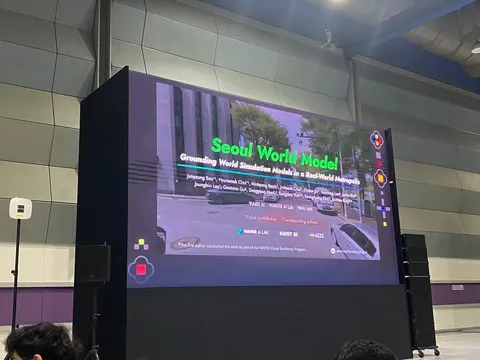
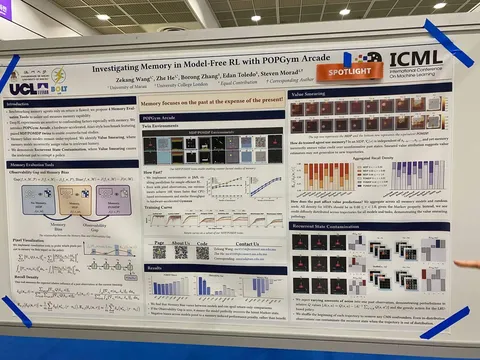
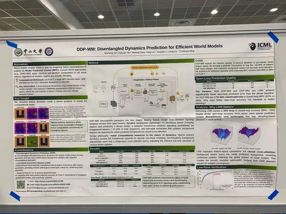

6 июля в Южной Корее стартовала одна из крупнейших конференций о машинном обучении — ICML. Участников очень много, работы охватывают самые разные тематики. Личным топом выступлений и постеров, полезных для автономного транспорта, делится наш коллега Иван Дубровин.
Seoul World Model
На Expo Talk авторы из Naver рассказали, как используют RAG поверх фотографий street view, чтобы генерировать настоящий Сеул, а не вооображать что-то похожее. Это позволяет эффективно обучаться, не запоминая весь мир, а также использовать постоянно обновляющиеся данные из карт без полного переобучения. Основной фокус — неперывная генерация на километровых масштабах.
На вход инференс получает глобальные координаты и текстовый промпт с описанием. В презентации приводили примеры генераций с разной погодой и временем суток, которые выглядели весьма правдоподобно, а также с наводнением, НЛО и Годзиллой, которые, ожидаемо, выглядели как кринж.
Во время инференса модель обращается к геобазе с картинками: проецирует виды на нужное положение камеры и использует их как основу для генерации. Чтобы бороться с окклюзиями, используют наборы фотографий, разнесённых во времени. Окружающие машины пока что просто бэкграунд, их ни на что не кондишнят.
Из зала спрашивали про SWM для обучения self-driving VLA моделей, но авторы подчеркнули, что пока сосредоточены на реалистичности и бесшовной генерации для больших расстояний.
Красиво, но хотелось бы больше деталей реализации.
Investigating Memory in RL with POPGym Arcade
Исследование моделей с памятью в MDP- и POMDP-сетапах. Для экспериментов авторы воссоздали на JAX популярные игрушечные среды с возможностью переключаться между полной и частичной наблюдаемостью.
Основной вывод — в полностью наблюдаемых средах, где вся информация содержится в последнем кадре, модели с памятью тратят капасити на историю и теряют из-за этого качество в настоящем. Авторы называют этот эффект memory bias.
Яркий пример: добавление шума в наблюдение 50 степов в прошлом значительно изменяет распределение на выходе. Другими словами, наблюдение out of distribution может заметно влиять на предсказания, пока остаётся в контексте.
DDP-WM: Disentangled Dynamics Prediction for Efficient World Models
Тоже не совсем про автономный транспорт, но уже ближе. Авторы оптимизируют WM для планирования роборуки через MPC.
Текущие SOTA-подходы применяют self-attention на все визуальные токены, не учитывая, происходит ли в соответствующих регионах какая-либо динамика. При этом динамика обычно содержится довольно разреженно.
Авторы предлагают добавить легковесный ViT, который предсказыват бинарную маску изменяющихся регионов. Основной тяжёлый трансформер работает только на «интересных» токенах, а с остальными потом считается cross-attention для восстановления деталей. Показывают бенчмарки, побитые как по скорости (вплоть до x9,2!), так и по точности.
В следующей части обзора обсудим ещё две яркие работы.
#YaICML2026
Запомнил и рассказал
404 driver not found


